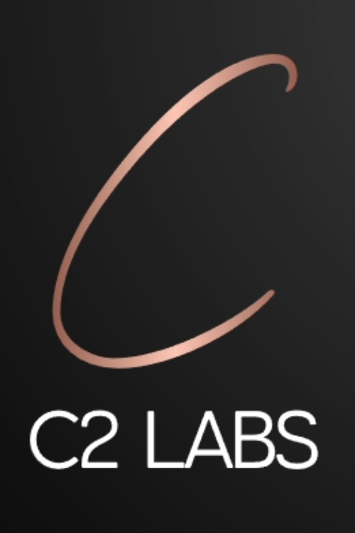
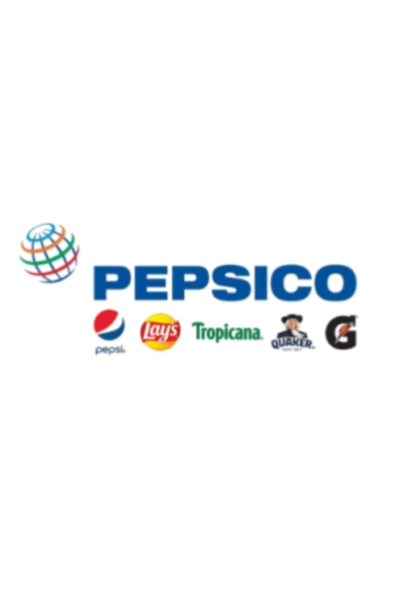
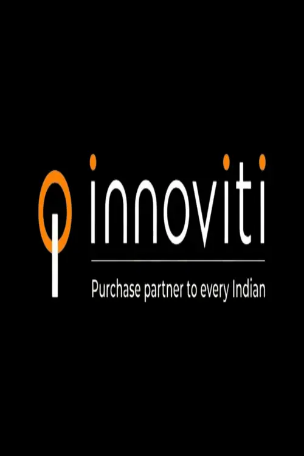

<!DOCTYPE html>
<html lang="en">
    <head>
        <meta charset="UTF-8">
        <meta http-equiv="X-UA-Compatible" content="IE=edge">
        <meta name="viewport" content="width=device-width, initial-scale=1.0">
        <title>Document</title>
        <link rel="stylesheet" href="style.css">
        <script src="https://kit.fontawesome.com/33f60e19b3.js" crossorigin="anonymous"></script>
    </head>
</html>
<body>
    <div id="header">
        <div class="container">
            <nav>
                
                <ul id="sidemenu">
                    <li><a href="#header">Home</a></li>
                    <li><a href="#about">About</a></li>
                    <li><a href="#projects">Projects</a></li>
                    <li><a href="#portfolio">Experience</a></li>
                    <li><a href="#contact">Contact</a></li>
                    <i class="fa-solid fa-xmark" onclick="closemenu()"></i>
                </ul>
                <i class="fa-solid fa-bars" onclick="openmenu()"></i>
            </nav>
            <div class="header-text">
                <h1>Hi, I'm <span>Akash</span> Bonagiri</h1>
                <br>
                <p>Software Development Engineer & AI, ML Researcher</p>
            </div>
        </div>
    </div>
<!----------------------------------------------------------------------------------about---------------------------------------------------------------->
<div id="about">
    <div class="container">
        <div class="row">
            <div class="about-col-1">
                
            </div>
            <div class="about-col-2">
                <h1 class="sub-title">About Me</h1><br>
                <p>Passionate computer science graduate student at UC Davis, seeking opportunities to apply my skills to create technology for positive change.

                    <!-- <li>Intern at C^2 Labs worked on a collaborative NLP research creating 5 customizable end-to-end applications like Semantic Role Labeling, comparing policies, and topic modeling. Published notebooks leveraging Transformer models</li> 
                    
                    <li>Developed an agricultural web app with integrated ML system at PepsiCo analyzing potato plant health through computer vision, providing optimized pesticide suggestions</li>
                    
                    <li>Previously identified high-potential merchants for Innoviti, improving marketing efficiency 60% through predictive data modeling</li>
                    
                    <li>Created Aletheia, an AI system for fake news detection in Hindi language and published two research papers. and many more(pls refer to the projects section in my profile for more details)</li> -->
                    
                    I am driven to take on challenging problems and build software that makes a real difference. Continuously looking for opportunities to learn, grow, and apply my skills in Java, React, Python, ML, NLP, CV and Web Development as part of a team of innovative engineers. If you're looking for an upbeat engineer with a knack for developing intelligent systems and robust applications, let's connect!</p>

                <div class="tab-titles">
                    <p class="tab-links active-link" onclick="opentab('skills')">Skills</p>
                    <p class="tab-links" onclick="opentab('experience')">Experience</p>
                    <p class="tab-links" onclick="opentab('education')">Education</p>
                </div>

                <div class="tab-contents active-tab" id="skills">
                    <ul>
                        <li><span>Natural Language Processing</span><br><br>NLP is my current area of research. Previously published 2 academic research papers on Fake News Detection for Hindi as First Author in ACM SIGCAS'21 and ACM CODS COMAD'22. Further now, two more research papers on Semantic Role Labeling, Comparing Policies, and Topic Modeling are to be published soon </li>
                        <br><li><span>Machine Learning</span><br><br>Worked with numerous ML models in different applications like ML in Genetics, ML in Bio-sensing, Predictive Analytics, Computer Vision, Knowledge Graphs, EDA etc.</li>
                        <br><li><span>Full Stack Web & App Development</span><br><br>Proficient in Full Stack Web Development. Previously worked with Django, Springboot, MERN, Android Studio frameworks </li>
                        
                    </ul>
                </div>

                <div class="tab-contents" id="experience">
                    <ul>
                        <li><span>Jun 2023 - Sep 2023</span><br>Software Development Intern @ C^2 Labs</li>
                        <li><span>Jun 2021 - Aug 2022</span><br>Software Engineer @ PepsiCo</li>
                        <li><span>Jul 2020 - Dec 2020</span><br>Machine Learning Intern @ Innoviti Payments</li>
                        <li><span>May 2019 - Jul 2019</span><br>Software Intern @ ESD, Govt. of Telangana</li>
                    </ul>
                </div>

                <div class="tab-contents" id="education">
                    <ul>
                        <li><span>Sep 2022 - Present</span><br>MS CS @ UC Davis</li>
                        <li><span>Aug 2017 - May 2021</span><br>BE ECE @ BITS PILANI</li>
                    </ul>
                </div>

            </div>
        </div>
    </div>
</div>
<!-------------------------------------------------------------------------------------Projects---------------------------------------------------->

<div id="projects">
    <div class="container">
        <h1 class="sub-title">My Projects</h1>
        <div class="projects-list">
            <div>
                <i class="fa-solid fa-language"></i>
                <h2>IG-SRL</h2>
                <p>An extensive, curated collection of functionalities and tasks in natural language processing(NLP), adapted to aid empirical policy analysis at scale.</p>
                <a href="https://github.com/BSAkash/IG-SRL">Learn more</a>
            </div>

            <div>
                <i class="fa-regular fa-newspaper"></i>
                <h2>Alethia:Fake-News-Detection-for-Hindi</h2>
                <p>A web application for Fake news detection in Hindi language based on Natural Language Processing(NLP)</p>
                <a href="https://dl.acm.org/doi/abs/10.1145/3493700.3493736">Learn more</a>
            </div>

            <div>
                <i class="fa-solid fa-map-location-dot"></i>
                <h2>Optimal-Map-Routing</h2>
                <p>Calculates optimal path between 2 points on actual real-life map using A-Star path finding algorithm</p>
                <a href="https://github.com/BSAkash/Optimal-Map-Routing">Learn more</a>
            </div>

            <div>
                <i class="fa-solid fa-comments"></i>
                <h2>Student Assist ChatBot</h2>
                <p>A chat bot application for assisting students in choosing elective subjects implemented using keyword matching and intent recognition</p>
                <a href="https://github.com/BSAkash/ChatBot">Learn more</a>
            </div>
            
            <div>
                <i class="fa-solid fa-gamepad"></i>
                <h2>PyGames</h2>
                <p>Games based on OpenCV and Pygame Library</p>
                <a href="https://github.com/BSAkash/PyGames">Learn more</a>
            </div>
           
            <div>
                <i class="fa-solid fa-stethoscope"></i>
                <h2>Disease-Detection-and-Diagnosis-expert-system</h2>
                <p>A medical expert system that helps diagnose the diseases and prescribe appropriate medication</p>
                <a href="https://github.com/BSAkash/Disease-Detection-and-Diagnosis-expert-system">Learn more</a>
            </div>
            
            <div>
                <i class="fa-brands fa-bitcoin"></i>
                <h2>Authentication-Scheme</h2>
                <p>A robust authentication scheme for multiple servers architecture based on PyCrypto Libraries</p>
                <a href="https://github.com/BSAkash/Authentication-Schemes">Learn more</a>
            </div>

            <div>
                <i class="fa-solid fa-dna"></i>
                <h2>Image-Processing-Android-Application</h2>
                <p>An Android application with image processing features and GUI for ECL bio-sensing</p>
                <a href="https://github.com/BSAkash/Image-Processing-Android-Application">Learn more</a>
            </div>

            <div>
                <i class="fa-solid fa-shield-virus"></i>
                <h2>Bayesian-Network-model-for-Covid-19-detection</h2>
                <p>Bayesian network model to suspect an individual of Covid-19</p>
                <a href="https://github.com/BSAkash/Bayesian-Network-model-for-Covid-19-detection">Learn more</a>
            </div>

            <div>
                <i class="fa-solid fa-om"></i>
                <h2>My Personal Website</h2>
                <p>My Personal Portfolio Website</p>
                <a href="https://github.com/BSAkash/bsakash.github.io">Learn more</a>
            </div>
        </div>
    </div>
</div>
<!-------------------------------------------------------------------------------------Experience---------------------------------------------------->

<div id="portfolio">
    <div class="container">
        <h1 class="sub-title">My Experience</h1>
        <div class="work-list">
            <div class="work">
                
                <div class="layer">
                    <h3>C^2 Labs</h3>
                    <p>Worked on a collaborative ML & NLP research creating 5 customizable end-to-end applications. Published notebooks leveraging Transformer models. My role involved working on Language Models, Semantic Role Labeling, Data Visualization, Web App Development, and deploying models using DL stacks. I created a suite of tools capable of serving batch requests through the API, performing in-app analysis of large sets of policy data, and generating visualizations for data interpretation for scalable policy analysis across various applications.</p>
                    <a href="https://www.linkedin.com/in/akash-bonagiri/details/experience/"><i class="fa-solid fa-up-right-from-square"></i></a>
                </div>
            </div>
                           
            <div class="work">
                
                <div class="layer">
                    <h3>PepsiCo</h3>
                    <p>Built a Machine Learning system which analyzes potato plant health using images of leaves and soil and recommends a chemical formula of pesticide based on the plant's disease. The ML application provides the user with a dashboard to input the image of the Potato leaves, select different stages of plant growth and finally lets the user know if the plant is healthy, else chemical formula of pesticide if unhealthy. Technologies Used: Python for ML system and Data Visualization, Streamlit for Web App.</p>
                    <a href="https://www.linkedin.com/in/akash-bonagiri/details/experience/"><i class="fa-solid fa-up-right-from-square"></i></a>
                </div>
            </div>
                
            <div class="work">
                
                <div class="layer">
                    <h3>Innoviti Payments</h3>
                    <p>Made accurate predictions about future trends by estimating the most successful merchants list for Innoviti Payment Solutions. Implemented data analysis with feature engineering using an iterative feedback mechanism on the transactions database. Technologies used: Microsoft PowerBI, LibreOffice, Microsoft Excel, Regression models. Filtered 60 out of 850 promising merchants and recommended them to the marketing team for better marketing strategies</p>
                    <a href="https://www.linkedin.com/in/akash-bonagiri/details/experience/"><i class="fa-solid fa-up-right-from-square "></i></a>
                </div>
            </div>
        </div>
        <a href="https://www.linkedin.com/in/akash-bonagiri/details/experience/" class="btn">See more</a>
    </div>
</div>

<!-------------------------------------------------------------------------------------Contact Me---------------------------------------------------->
<div id="contact">
    <div class="container">
        <div class="row">
            <div class="contact-left">
                <h1 class="sub-title"> Contact Me</h1>
                <p><i class="fa-solid fa-paper-plane"></i>bsakash1999@gmail.com</i></p>
                <!-- <p><i class="fa-solid fa-square-phone"></i>+1 530-933-7400</p> -->
                <div class="social-icons">
                    <a href="https://www.linkedin.com/in/akash-bonagiri/"><i class="fa-brands fa-linkedin"></i></a>
                    <!-- <a href=""><i class="fa-solid fa-envelope"></i></a> -->
                    <!-- <i class="fa-brands fa-github"></i> -->
                    <a href="https://www.facebook.com/bonagiri.akash"><i class="fa-brands fa-facebook"></i></a>
                    <a href="https://www.instagram.com/eternal_antique/"><i class="fa-brands fa-instagram"></i></a>
                </div>
                <a href="images/my-cv.pdf" download class="btn btn2">Download CV</a>
            </div>
            <div class="contact-right">
                <form name="submit-to-google-sheet">
                    <input type="text" name="Name" placeholder="Your Name" required>
                    <input type="email" name="Email" placeholder="Your Email" required>
                    <textarea name="Message" rows="6" placeholder="Your Message"></textarea>
                    <button type="submit" class="btn btn2">Submit</button>

                </form>
                <span id="msg"></span>
            </div>
        </div>
    </div>
    <br>
    <div class="copyright">
        <p>Copyright © <span class="copyright-color">Akash Bonagiri</span>. Made with <span class="copyright-color"></span><i class="fa-solid fa-heart"></i></span> by Akash.</p>
    </div>
</div>


<script>
    var tablinks = document.getElementsByClassName("tab-links");
    var tabcontents = document.getElementsByClassName("tab-contents");

    function opentab(tabname){
        for(tablink of tablinks){
            tablink.classList.remove("active-link");
        }
        for(tabcontent of tabcontents){
            tabcontent.classList.remove("active-tab");
        }
        event.currentTarget.classList.add("active-link");
        document.getElementById(tabname).classList.add("active-tab");
    }
</script>

<script>
    var sidemeu = document.getElementById("sidemenu");

    function openmenu(){
        sidemeu.style.right = "0";
    }

    function closemenu(){
        sidemeu.style.right = "-200px";
    }
</script>

<script>
    const scriptURL = 'https://script.google.com/macros/s/AKfycbwv8Q0BmBBQThyFKxGAclwBjFBzIsTWH-pwe0jThv_YlHbRTIL-egIxxeIKo2OnwYyK/exec'
    const form = document.forms['submit-to-google-sheet']
    const msg = document.getElementById("msg") 

    form.addEventListener('submit', e => {
      e.preventDefault()
      fetch(scriptURL, { method: 'POST', body: new FormData(form)})
        .then(response => { 
            msg.innerHTML = "Message sent successfully!"
            setTimeout(function(){
                msg.innerHTML = ""
            },5000)
            form.reset()         
        })
        .catch(error => console.error('Error!', error.message))
    })
  </script>

</body>
</html> 